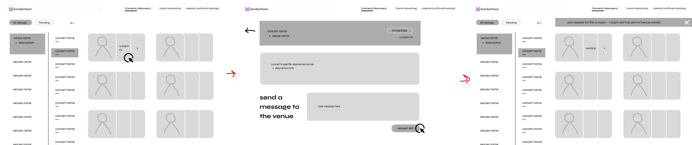

Bandsintown Amplify
UX/UI Design, User Research, Product Design, Mobile
A live music booking and networking platform that streamlines the process of creating live shows for artists and venues.

×

My Role
- User Researcher
- UX/UI Designer
- Usability Testing
Team
- Kathy Datsky
- Kezia Taufiq
- Harry Shiu
- Jalene Pang
Tools
- Figma
- After Effects
- Google Excel
Duration
- 7 weeks - Fall 2024
Overview
This project was part of an advanced-level course that examines the design practices of Interaction and User Experience Design. Bandsintown Amplify provides solutions for local music artists who face challenges booking shows and building connections within their local music scene.
I led the interface and interaction design for the Bookings feature, which facilitates scheduling between artists and venues. The feature ensures that artists can invite other bands and book venues that are available to all participating bands in one platform.
Try Figma prototype of ↗Identify the Problem
During the process of exploring this domain, I came across an article highlighting how local artists often have to manage every aspect of their work, from creation to marketing, sales, and logistics, entirely on their own.
This insight prompted us to conduct interviews with four local Vancouver artists to better understand their workflows and pain points. Our goal was to uncover opportunities where design could intervene to ease one or more touchpoints in their creative and operational processes.
The problem based on the interview's insights
Local artists have a hard time booking shows because the process is time-consuming and depends too much on who you know.
Pain Point 1
When you're the one setting up the show, you have to juggle every person's schedule.
The booking process starts from artists forming a “bill", which is a list of artists that are going to perform and send it to venues. This process wastes time as the artists have to go back and forth trying to manage a day works for everybody in the bill and the venues.
Pain Point 2
During the booking process, artists must email a bunch of venues to check availability and gears to find one best fit.
Small venues often operate without dedicated booking agents who book artists for the venues, making the responsibility lying on artists to discover venues' availabilities themselves.
Pain Point 3
New artists, who want to play shows, don’t know about the process or how to access the process.
The current system relies heavily on unwritten rules, word-of-mouth knowledge, and informal practices, making it intimidating and exclusionary for those who are just entering the scene.
Pain Point 4
Artists without strong networks struggle to find gigs and build momentum in their careers.
Connections are not just important, they're everything. Networking plays a crucial role in securing gigs and gaining visibility in the community, often determining the success of an artist's career at the local level.
Design Challenge
“How might we strengthen and streamline the connection and concert creation processes for local artists and small venues in order to reinforce the local music scene's ability to facilitate creative opportunities?”
Design Process
Ideation and early-stage wireframes
As many artists struggle to find gigs and form a full lineup, I proposed a flow where venues could post available slots for shows, and artists could book them without needing to network. I created quick interactive low-fidelity wireframes to test this idea with two artists who have played a few shows before.
The testing results showed that they didn't understand it as a system where they could book a spot to perform, but rather as a platform to find concerts to attend and network. This was when we realized the importance of networking and following the traditional processes that artists usually rely on.
Proposed user-flow & first prototype iteration
Based on the initial testing, the new user flow is created to help artists find concerts to go and connect with new artists, while booking remains the core feature to help users easily form bills and book venues.
I was in charge of creating the wireframe for the landing page and the first few screens of the booking process. While creating the prototype, I made a design system using Figma components to make sure that the UI was cohesive across the website.
Usability Testing
An online usability test using the think-aloud method and semi-structured interviews with 1 new and 2 experienced Vancouver artists was conducted to ensure our insights reflect the app's primary target audience. I assisted in synthesizing the testing results, and here are the primary issues I found during testing:
Missing Users' Existing Routines
While the desktop version met the usability needs, user feedback highlighted a strong preference for a mobile experience, as artists primarily use their phones for booking gigs and networking.
Users feel skeptical about the review system.
Users find the review system in which artists review venues and vice versa gives venues too much power. They worry about receiving bad reviews but also find overly positive reviews unhelpful.
Difficulty in understanding “pending” concert
Users misunderstand the 'pending' concert status, thinking they haven't finished the bill and are still in the process of submitting it to venues, rather than waiting for venue confirmation.
Lack in Providing Venue’s Information
Users expect to see information such as the sound system and floor plan when clicking on a venue's profile page. But the current interface only shows upcoming concerts and venue reviews.
Refined Interface
Moving to a mobile version to support users' regular behaviors
The final intervention takes the form of a mobile application, allowing users to easily access gigs and manage their booking progress.
Removing the review system and providing more information about venues
Avoid giving users an uncomfortable experience and focus on providing the necessary details to support their decision-making.
Bandsintown Amplify in Action
Discover, connect, and stay up to date with others in your music scene
The Discover tab empowers artists to discover shows and other talents, explore their music through Spotify integration, and determine if a collaboration is the right fit.
Creating your bills, inviting bands, booking venues all in one place
Bookings feature provides a streamlined, accessible, and transparent guided booking process. Tailoring to preferences, artists can manage your their bills, and view and invite other artists in the progress.
Simplified the venue searching and scheduling process
By syncing the calendars of all individual artists on the bill with the venue’s open slots, the app recommends the best time and helps reducing the workload of the bill creator.
View Requests for Venues
Venues will receive a email notification when a booking request is sent to them. All necessary information is aggregated in one place including music samples, performance videos, and organizational information.
Reflection
This was definitely the most impressive and demanding project I've ever worked on, especially considering that all of the visual direction, interaction design, and prototyping occurred within two weeks, with the final week in which we transitioned entirely from a website version to a mobile version after discovering that artists primarily use mobile devices to form gigs with each other.
As one of the lead visual designers, I was responsible for creating the UI components of the work you see above. This project taught me a lot about the design process and research. As our first experience design project, our group struggled to identify the right problems to tackle and to pair them with research that would drive effective solutions. It reinforced the importance of not designing in isolation and of challenging every assumption through research-driven insights.